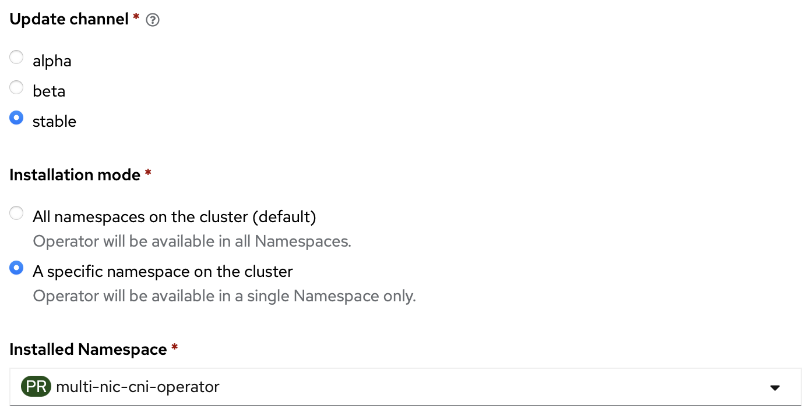

Stable Channel (default)

v1.2.6
Highlights
- upgrade go version
- controller: GO 1.22
- daemon, CNI: GO 1.23
- remove kube-rbac-proxy
- add make
set_versiontarget to simplify release steps - update concept image, user and contributing guide
- rewrite the highlighted features and add demo and references
Fix
- sample-concheck make error
- failed to load netconf: post fail: Post "http://localhost:11000/select": EOF
v1.2.5
Highlights
- support multiple resource names defined in NicClusterPolicy for Mellanox Host Device use case
- remove unnecessary selection policy call when network devices have already selected by the device plugin
v1.2.4
Major feature update: - The following attributes of HostInterface is changed to optional.
NetAddress string `json:"netAddress,omitempty"`
HostIP string `json:"hostIP,omitempty"`
Vendor string `json:"vendor,omitempty"`
Product string `json:"product,omitempty"`
PciAddress string `json:"pciAddress,omitempty"`
- Set default container of controller pod to
manager. - Namespace watcher to watch newly-created namespace and create a NetworkAttachmentDefinition of the existing MultiNicNetwork.
Fixes
- LastSyncTime is nil.
- Invalid resource name with prefix.
see: https://github.com/foundation-model-stack/multi-nic-cni/pull/182
v1.0.5
Improvements:
- allow own namespace and single namespace
Bug fixes
- unavailability of unrelated subnet Issue #117
- try getting daemon pod if cache not found when calling interface update Issue #118
- continue after net-attach-def create/udpate error in PR #114
v1.0.4 (deprecated)
CRD changes:
- config:
- add following dynamic config values
// type ConfigSpec struct UrgentReconcileSeconds int `json:"urgentReconcileSeconds,omitempty"` NormalReconcileMinutes int `json:"normalReconcileMinutes,omitempty"` LongReconcileMinutes int `json:"longReconcileMinutes,omitempty"` ContextTimeoutMinutes int `json:"contextTimeoutMinutes,omitempty"` LogLevel int `json:"logLevel,omitempty"`
- add following dynamic config values
Improvements:
- apply linter code analysis removing unused function, handling errors
- allow changing reconciler time and log level on the fly from config.multinic
- change file strcuture
- separate unit-test folder
- move constatnt and shared varaible to vars package
- allow changing synchronization ticker period (TickerIntervalKey) and maximum size of daemon pod watching queue (MAX_QSIZE) from environment variable
- change logger time encoder to ISO 8601
- support OwnNamespace/SingleNamespace namespace deployment
Bug fixes:
- computeResult is reset at one point after CIDR update with no change
- potentially hang at scale due to API server never return for large amount of listing
- continue creating NetworkAttachmentDefinition even if it is failed to create/update NetworkAttachmentDefinition in some namespaces
v1.0.3 (deprecated)
CRD changes:
- cidrs:
- add corresponding IPPool to CIDR spec (
spec.cidr.hosts[*].ippool)
- add corresponding IPPool to CIDR spec (
- multinicnetwork:
- add host discovery and processing progress (
status.discovery) - add network config status (
status.configStatus)
- add host discovery and processing progress (
- config:
- add toleration spec for e2e integration test and future taint usecases (
spec.daemon.tolerations)
- add toleration spec for e2e integration test and future taint usecases (
Improvements:
-
separate log level on controller manager
Verbose Level Information 1 - critical error (cannot create/update resource by k8s API)
- "Set Config" key
- set up log
- config error2 - significant events/failures of multinicnetwork 3 - significant events/failures of cidr 4 (default) - significant events/failures of hostinterface 5 - significant events/failures of ippools 6 - significant events/failures of route configurations 7 - requeue
- get deleted resource
- debug pointers (e.g., start point of function call) -
log CNI message on host
- main plugin:
/var/log/multi-nic-cni.log - IPAM plugin:
/var/log/multi-nic-ipam.log
- main plugin:
- add CI tests
- multi-nicd test (daemon and CNI components)
- end-to-end 200-node scale test on kind cluster using kwok
Bug fixes:
- sequential CIDR update blocking in scale (scale issue)
- unexpected HostInterface deletion when API server is stressed (scale issue)
- unexpected interface updates on HostInterface when API server is stressed (scale issue)
- missing HostInterface at initialization (fault-tolerance issue)
v1.0.2 (deprecated)
- First release (as open source)
Core Features:
- Host-interface auto-discovery
- Single definition for multiple secondary network attachments
- Multi-NIC IPAM (CIDR computation, IP allocation/deallocation) for multiple secondary subnets
- L3 configurations on host neighbour route table corresponding to ipvlan CNI plugin with l3 mode
Supplementary Features:
- NIC selection based on specific requested number or specific interface name list
- Dynamic CIDR updates when
- detecting added/removed hosts at creation/deletion of multi-nic daemon
- (periodically) discovering added/removed secondary interfaces
- Fault tolerance in scale (tested upto 100 nodes x 2 secondary interfaces) with
- initial synchronization of CIDR, IPPool after controller restarted
- periodic synchronization of L3 routes for hosts which were restarted and lost the configuration